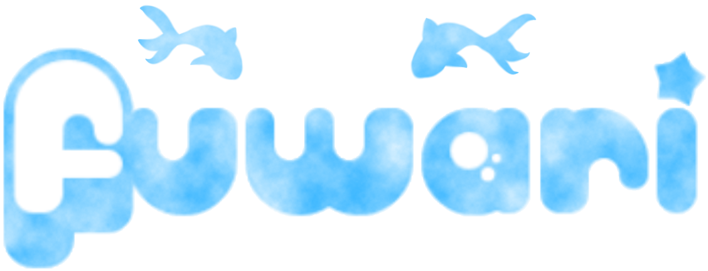

Modelado y entornos estilizados para videojuegos
° Diseñadora 3D con enfoque en creación de personajes,
entornos 3D y experiencias interactivas en Unity.
° Experiencia en modelado y texturizado en Blender,
optimización de escenas y trabajo en proyectos colaborativos en unity.
° Destaco por mi capacidad de trabajo en equipo, asumiendo
frecuentemente roles de liderazgo para coordinar y potenciar
el desempeño del grupo.
° Soy responsable, proactiva y comprometida con la mejora
continua y el aprendizaje constante.